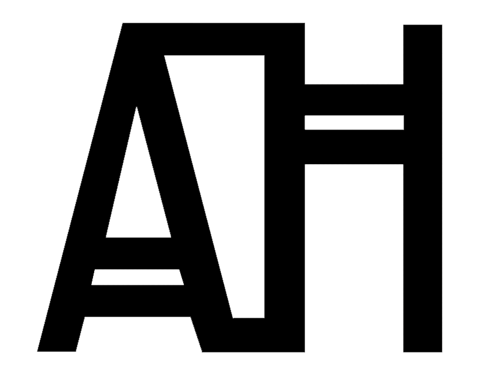

Through The Box
Ammani Journey
Year | 2019 | Competition
Type | Installation
Programming the urbanscapes of Amman. As Urbanists or "Flâneurs" we have been used to wandering the streets, noting, listening, and watching with no ulterior motive rather than to observe society and the city. You can see how the city developed from the small details of the sidewalks or the cracked shutters of an old Ammani house. Can we translate this experience into a form that is sensed? Walking around the streets of Amman, from the airport road to Downtown, taking video snippets and recording sound; which is then translated into an algorithm that would use the sounds recorded along with the pictures to create a visual which is not only linked to the sounds heard, but to their frequencies, pitch and silence. One that is repeated, rotated, transformed on the screen to merge sound and sight in order to reflect our Amman.